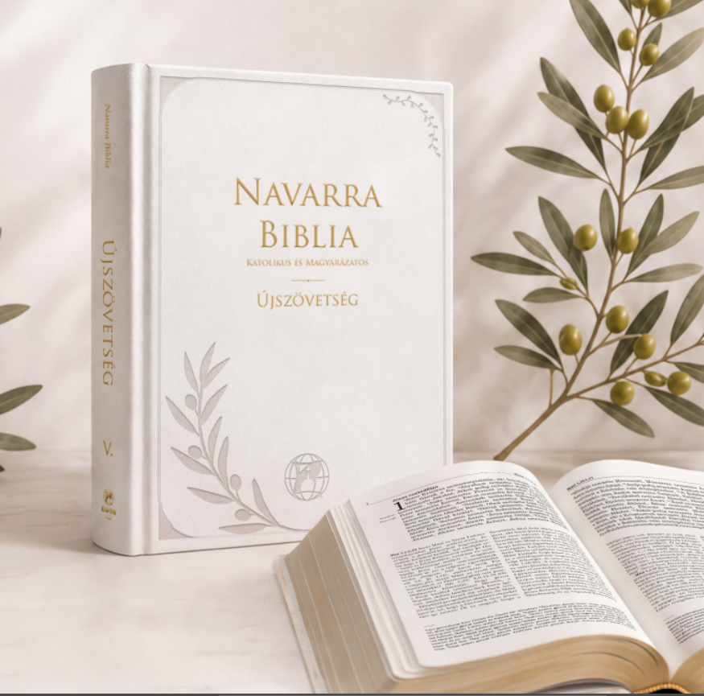

Teljes Újszövetség
A Káldi–Neovulgáta Bibliafordítás szövegével.
Katolikus Újszövetség magyarázatokkal
A Navarra Biblia nem csupán egy könyv – egy út Istenhez.
Előrendelem Belelapozok Máté evangéliumába
Olvasd az Igét.
Értsd az Egyházzal.
Éld Istennel.
Isten Igéje. Közelebb hozzád.
A Navarra Biblia segítségével mélyebben megérted az Újszövetséget, és közelebb kerülsz a téged szerető Istenhez.
A Szentírás teljes szövege és az Egyház élő hagyományára épülő magyarázatok egyetlen, egységes kötetben segítik az olvasást, a tanulmányozást és az imádságot.
Minden. Egy kötetben.
A Káldi–Neovulgáta Bibliafordítás szövegével.
Egyházatyák, szentek írásai és pápai dokumentumok alapján.
Az Egyház tanítására és a Katekizmusra építve.
Teológiai értelmezés, történelmi háttér és gyakorlati alkalmazás.
„Jézus életének minden eseménye, minden példabeszéde, minden szava és minden tette része a mi mindennapi életünknek.”
Közösségi kiadás
Az előrendelők száma közösen alakítja a végleges árat. Minden csatlakozó közelebb visz a következő árszinthez.
Az automatikusan frissülő számláló az előrendelési rendszer csatlakoztatása után jelenik meg.
A végleges vételár a kampány lezárásakor elért közösségi árszint szerint alakul.
Lapozz bele
A mintakötet 121 oldalát lapozhatod végig. Nagyíts bele, használd a nyílbillentyűket, vagy nyisd meg teljes képernyőn.
A mintakötet betöltése…
Az oldal nem tölthető be.
Csatlakozz a közösségi kiadáshoz
Jelezd előrendelési szándékodat. A végleges közösségi árról és a megjelenés részleteiről e-mailben kapsz tájékoztatást.
Az előrendelés elküldése nem jelent azonnali fizetési kötelezettséget.